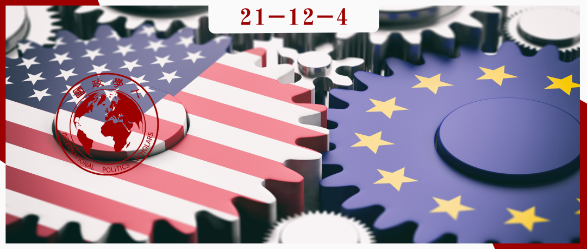

收录于合集 #《国际关系前沿》2021年第12期 22个

作品简介
作者： 迈克尔·E·史密斯，阿伯丁大学政治学与国际关系学系教授，于加州州立大学欧文分校获得政治学博士学位。他曾担任欧盟富布赖特学者、欧洲研究委员会研究员、欧洲政策研究中心访问研究员等。他目前的研究兴趣涉及国际合作、冲突解决和全球治理，主要关注安全与技术领域、美国与欧盟。
编译： 刘培晨（国政学人编译员，中国人民大学国际关系硕士研究生）
来源： Smith, Michael. (2018). Transatlantic Security Relations since the European Security Strategy: What Role for the EU in Its Pursuit of Strategic Autonomy?. Journal of European Integration. 40. 605-620. https://doi.org/10.1080/07036337.2018.148884.
归档： 《国际关系前沿》2021年第12期，总第39期。

内容摘要
在美国9/11恐怖袭击、欧盟危机管理/安全援助行动启动以及2003年《欧洲安全战略》(ESS)发布之后，跨大西洋安全合作进入了一个新时代。多年的实践经验激励欧盟通过制定网络安全战略、海上安全战略和最近的2016年《欧盟全球战略》（EUGS）来增强其在这一领域的雄心。这些努力尊重北约在欧洲防务中的主要作用。在危机管理和安全援助行动方面，欧盟和美国有更多的实际合作空间。虽然在这方面取得了一些成功，但是欧盟越发想要在该领域开辟自己的道路，这可能与美国的优先事项产生分歧。本文评估了跨大西洋安全合作的最新进展与未来预期，关注在ESS、EUGS和相关文件中展现出的战略优先事项。
文章导读
01
引言
后冷战时代的特点之一是国际安全议程急剧扩展，包括一系列新的安全挑战，远远超出与国家间战争相关的挑战。其中许多问题往往以危机的形式出现，给跨大西洋安全关系带来了巨大压力，而这一关系恰恰是现代世界政治中最重要的伙伴关系之一。尽管美欧可能一致认为有必要管理其中许多问题，但双方对具体问题的回应方面表现出相当大的分歧；在其他关键领域也可以看到这种趋势，例如2008年全球经济危机后的金融市场监管。
那么，鉴于大西洋两岸当前的政治趋势，跨大西洋安全关系会在多大程度上趋同或是分化？面对这些新的安全挑战，跨大西洋关系的有效合作前景如何？针对这些问题，本文重点探讨在各种危机的压力下，美国和欧盟能否成功合作。
本文的研究将基于欧盟为辩护其安全政策所使用的修辞或话语，这些修辞和话语可以从2003年ESS到2016年EUGS所表达出的声明和准则中发现。 事实上，欧盟安全政策研究的一个主要难题是，欧盟在该领域的公开抱负与其实际成就之间存在巨大差距。因此，这里主要关注的是欧盟的安全实践如何发生变化，尽管美国政府尽了最大努力以维持欧洲对美国政策的支持，但这种变化将继续使美欧安全关系复杂化。
本文首先指出， 欧盟作为国际安全参与者的出现，是由应对其边界上的特定挑战（危机和其他问题）的需要所驱动的，也是由一种总体欧洲战略学说所激发的。 这种学说可以追溯到基于现实主义、自由主义或是建构主义的任何单一理论因果逻辑。其次， 本文聚焦于美欧在安全领域存在分歧的两大具体问题：多边主义和军事力量的使用。在这两个问题上，欧盟一直试图在国际安全事务中开辟自己的道路，而不是条件反射式地跟随美国的领导。第三，基于美欧安全关系的近期实践，本文发现美欧安全实践在多年以前存在更多分歧，但是也确实显示了合作的证据。第四，尽管在具有共同利益的领域，一定程度的跨大西洋合作将继续保持，但是鉴于EUGS、英国脱欧、特朗普当选与其他事态，美欧存在分歧的趋势可能会持续下去。
02
从理论到实践：欧盟成为安全行为体
冷战后的90年代，美国与欧盟就北约的重新定位、欧洲安全的未来展开长期辩论。90年代末，美欧双方最终进行了某种战略交易——负责维持跨大西洋防务的北约组织同时需要关注新任务（例如反恐和网络安全），而美国接受独立的欧盟安全力量（表现为欧盟共同安全和防务政策）。 独立的欧盟安全力量可以补充北约的作用，但是不能从根本上取代或复制北约。 自那时起，欧盟的安全力量开始分阶段发展，主要是为了应对类似于南斯拉夫解体所产生的安全挑战与危机管理。 这些在维护北约与欧盟关系方面的成就掩盖了令人不安的事实：欧盟显然不愿意启动自己的独立安全行动。欧盟的两个基本问题在于，不愿将更多资源用于军事力量以及无法制定制度、程序以有效使用各类资源。 这些问题随后被用来证明，美国在跨大西洋安全事务中的持续主导地位。即使欧盟能够设法解决上述两个问题，如果美欧对安全的看法出现分歧，欧盟仍然无法与美国相竞争或采取反对美国的行动。
在北约对科索沃/塞尔维亚进行武装干预之后，欧盟意识到其局限性，并于2003年出台第一个《欧洲安全战略》（ESS），提出自己对欧洲安全的看法来弥合理论与实践之间的差距。ESS背景下最显著的变化是欧盟决定在CSDP（Common Security and Defense Policy，共同安全与防务政策） 框架下领导自己的安全行动。自2003年以来，欧盟启动30多个CSDP行动并支持相关行动；除了众多CSDP的民事任务外，这些任务还涉及在巴尔干和非洲部署陆基军事力量，以及在非洲之角和地中海开展海上安全行动。 这里探讨的关键在于，这些新的欧盟行动与欧盟内部安全事务、发展/人道主义援助政策的各种相关努力具有一致性，证明关于安全的跨大西洋辩论不再仅仅是理论性或修辞性的：随着CSDP行动的范围和复杂性的扩大，欧洲人越来越需要为自己辩护，不再只是对某些美国政策进行原则性地反对（这种反对大部分是被动的），而是考虑到欧盟自身的领导力、有效性、价值观以及创新、风险承担能力。
03
跨大西洋安全事务中的多边主义和军事力量
在冷战期间与冷战后，欧洲因被视为美国在世界政治中的小伙伴而感到不安，这激发了更广泛的欧洲外交政策合作，例如70年代的欧洲政治合作、90年代的共同外交和安全政策以及后来的CSDP。 在欧盟最高决策者制定的国际安全实现路径中，包含一种功利主义伦理，即在管理欧洲现代安全问题方面什么是最有效的政策；以及道义伦理，即哪些政策不仅更有效，而且更能反映更大共同体（欧盟）的基本价值观。 这些维度，也可以被定义为“功能逻辑”和“适当性逻辑”，二者是直接相关的：更高的有效性可以提高对合法性的看法。这种二维伦理辩论还涉及内外组成部分：欧盟的外部政策及其反映的价值观必须向外部世界和该共同体的其他成员证明其正当性，在这种情况下，欧盟是一个具有自己话语和国际法律身份的机构，而不仅仅是一个俱乐部、一个共同市场或是一个松散的国家集团。 因为欧盟的存在本质上依赖于日益制度化的多边合作、法治以及尽可能和平解决争端的偏好，所以只有当欧盟试图与外部参与者就特定问题进行接触时，它尝试促进和捍卫这种方法才有意义，才能捍卫其合法性。
尽管欧盟愿意与美国合作，但它确实将自己表现为完全不同于美国的一个安全角色，而且早在特朗普当选之前就这么做了。此外，欧盟声称并试图仅在各种限制范围内采取行动，尽管它希望提高其作为国际安全参与者的有效性和合法性。首先，欧盟显然没有把军事力量放在首位，它强调全方位权力资源的优点， 包括经济权力（即市场准入、财政援助与制裁）、非物质性权力（即“软”权力、“平民”权力、“道德”权力或“规范”权力），以警察或宪兵部队形式存在的威胁较小的武装力量类型，以及欧盟的外交/安全政策的“综合”方法。 其次，它承认进攻性军事力量在处理复杂的安全问题（超越严格的领土防御）上的局限性，以及军事行动可能通过增强目标国的抵抗（以叛乱或类似策略进行抵抗），从而使欧盟军事行动执行者面临更糟的情况。 第三，欧盟依赖军事资源这一最后手段，以捍卫其价值观和原则，它还积极致力于通过制度改革（CSDP）、资源再分配（欧洲防务署、欧洲国防基金、关于国防能力的永久结构性合作等）、共同战略计划（ESS与EUGS）、特定部门政策（海事安全和网络安全）和其他政策倡议，将军事能力整合到更为广泛的一体化项目中。
总体而言，欧盟自述所采取的安全手段反映出欧盟成员国之间高度制度化、多层面的多边合作。 基于对欧盟作用的这一理解，对美欧安全分歧的重要预测因素包括多边主义、作为最后手段（如果有的话）的军事力量以及国际法规则（主要是联合国系统）的作用：欧盟战略和政策的每个组成部分都想尊重以上原则，以此为欧洲的核心价值观，而美国则是按照其意愿，选择支持或放弃多边主义、法治以及美国认同的联合国观点，并选择以宜早不宜迟的方式诉诸武力。欧盟对美国安全政策的支持或反对似乎都取决于美国自己部署武力的意愿以及美国对多边主义、联合国和国际法的更广泛承诺，而这些早在特朗普当选之前就已经很脆弱。
04
跨大西洋关系与欧洲安全合作实践
欧美在广义的国际安全事务方面仍存在差异，这种差异甚至可能是跨大西洋的分歧。需要记住 两个重要警示： 首先，当其他行为体（如俄罗斯或美国）不支持时，欧盟面对重大问题采取果断和独立行动的能力有限；其次，美国和欧盟在拥有共同利益的情况下仍愿意进行有效合作，这意味着我们未来几年在跨大西洋安全事务中看到的任何进一步分歧都不一定会使跨大西洋关系永久瘫痪。
关于第一个警示，很明显欧盟在重要国际安全问题上并不总是表现出高度的内部团结，例如“阿拉伯之春”所产生的问题。因为欧盟本身是一个以条约为基础的国际组织，而非仅仅是国际安全的提供者/行动者，其成员国在各种形式的安全/防务合作（欧盟、北约和其他安排，包括中立）上的投入存在很大差异。
关于第二个警示，当仔细观察CSDP行动范围时，很明显近几年来美国和欧盟在共同利益领域进行了积极的安全合作，包括欧盟第一次CSDP行动接管北约在巴尔干地区的军事维和行动、2008年后欧盟与北约在亚丁湾地区开展海军巡逻和安全运输通道建设等。
05
前景：2016《欧盟全球战略》
2016年《欧盟全球战略》及其此后的相关安全政策承诺表明，欧盟确实打算提高自身能力，以防范不被美国视为优先事项的安全问题。同样明显的是，欧盟将采取这些行动，即使会违反某些美国决策者的立场或期望。例如，欧盟在刚果民主共和国首次启动其独立的CSDP维和行动时，甚至没有通知美国。 甚至在特朗普政府上台给美欧安全伙伴关系带来新压力之前，欧盟就已经在制定更详细的安全计划，这些计划可能与美国的优先事项相吻合，也可能与美国的优先事项不符。
2016年《欧盟全球战略》进一步拓宽了欧盟的战略思维，超越了ESS和海洋安全战略等具体的安全理论，并将多边合作作为发展全球治理的工具，这再次将欧盟与美国诉诸单边主义的意愿区分开来。 事实上，《欧盟全球战略》提到以下五个战略优先事项：安全和防务（包括威慑能力）、增强东部和南部国家和社会的恢复力、处理冲突和危机的综合办法、促进区域合作秩序与加强21世纪的全球治理。
这些优先事项已经在其他欧盟规划文件中出现过，这些文件可以追溯到ESS和更早的版本，尽管形式可能略有不同，其中有一个 重要的主题将它们联系在一起：欧盟的战略自主概念。 换句话说， 欧盟战略不仅仅是采取行动，而是欧盟拥有（潜在）选择各种行动方案的自由，特别是在危机期间，不是被迫做出艰难的决定，或让其他主要参与者（如美国或俄罗斯）采取行动。欧盟战略还包括更加积极主动的态度，使其在欧盟采取行动时变得更加有效和可信。欧盟在许多方面都没有实现这些目标，但很明显欧盟认识到了这一问题，并正在采取具体措施解决。
06
结论
在就建立独立的欧洲武装部队进行了多年的争论之后，欧盟启动自己的CSDP军事、警务和其他安全行动已经超过15年。通过这些行动，欧盟部署了一整套外交和安全政策工具，其中一些在不到20年前还不存在。这些努力清楚地表明，欧盟作为安全行动体的信心日益增强，并有能力通过创新的外交政策行动支持其雄心勃勃的目标。当然，欧盟在机动性、可持续性、后勤、侦察、监视和情报等领域仍存在很大的能力短板。尽管欧盟已经证明它有能力整合所有政策工具，实践者和分析家都认为，欧盟需要做更多的工作，以确保有效使用这些组合工具，并在维和失败时应对更为暴力的紧急情况。欧盟作为一个独立安全行为体的学习曲线可能仍然相当陡峭，而且因为欧盟面临新挑战，成为独立安全行为体之路可能十分艰难。
译者评述
本文可以视为是为欧盟战略自主、为安全与防务发展辩护的一篇文章。其主要观点有三：（1）欧盟追求战略自主的发展，不是一个全新的产物，而是在欧盟发展的历史中有迹可循。例如，2003年公布的《欧洲安全战略》提出要提升欧盟的战略能力，确定欧盟安全的五个威胁。在《欧洲安全战略》背景下，欧盟开始在共同防卫与安全政策框架下领导自己的安全行动，包括大量的民事任务、在巴尔干与非洲地区部署兵力、开展海上安全行动，欧盟的行动愈发显示出主动性，愈发显示出自己对领导力、有效性、价值观以及创新、风险承担能力的考虑。（2）欧盟追寻战略自主，尤其是在安全防务领域，有自己的设计，试图展现伦理优势，包括功利主义伦理（欧盟管理欧洲现代安全问题方面最有效的政策）与道义伦理（政策不仅得有效，而且更能反映更大共同体（欧盟）的基本价值观）。（3）欧盟与美国/北约分歧早在特朗普严重损害跨大西洋关系前就已存在，而且将在未来持续存在，但是双方仍有合作空间。
增强欧盟的防务能力是提升欧盟战略自主的一个重要方式，欧盟目前在防务自主上已经走出切实的步伐，主要包括欧洲防务基金（EDF）、军事计划与行动能力机制（MPCC）、永久结构性合作（PESCO）与年度防务协调评估机制（CARD）。但是，美国/北约始终是影响欧盟战略自主（尤其是防务自主）的核心因素。北约框架下的集体防务是欧美安全关系的核心支柱，然而北约对欧盟防务发展态度有所保留，甚至是警惕态度，这种警惕态度在历史与现实中都是一致的。在历史上，美国曾对1998年圣马洛峰会的法英共识画下红线，即欧盟的独立防务不能与北约脱钩（delinking）、重叠（duplication）和歧视（discrimination）。2021年9月，面对美军撤离阿富汗，欧盟借此契机呼吁建立自主的欧洲军事能力，建设快速反应部队，北约秘书长斯托尔滕贝格表示欧盟组建军队可能会削弱跨大西洋联盟的力量并分裂欧洲，任何尝试创建类似机构、复制指挥系统的行为只会削弱我们整体互动的潜力，因为资源非常有限，我们必须避免重复工作。随着欧洲战略自主、防务自主的推进，欧盟将会面临成员国组成与功能上的趋同，尽管双方各有侧重，但是双方的重叠会导致竞争关系，导致军事资源浪费、决策效率降低等问题。欧盟的防务自主难以摆脱北约在欧洲安全秩序结构中的主导地位,它只是内嵌于这一秩序结构中的一个有机组成部分。欧盟走向战略自主，迈向防务自主，始终要面对与北约的平衡。
参考文献
[1] Madeleine Albright, “Statement to the North Atlantic Council,” U.S. Department of State, December 8, 1998, https://1997-2001.state.gov/statements/1998/981208.html
[2]Joshua Posaner, “EU Defense Plans ‘Can Never Replace’ NATO, Says Stoltenberg,” Politico, September 5, 2021, https://www.politico.eu/article/jens-stoltenberg-nato-eu-defense-plans- warning/
[3]郑春荣、范一杨：《重塑欧美安全关系——对欧盟“永久结构性合作”机制的解释》，载《欧洲研究》，2018年第6期，第1-24页。
词汇整理
共同安全和防务政策 CSDP: Common Security and Defense Policy
《欧洲安全战略》 ESS: European Security Strategy
《欧盟全球战略》 EUGS: European Union Global Strategy
责编 | 吕紫烟 黄慧彬
排版 | 顾金源 方引弓
文章观点不代表本平台观点，本平台评译分享的文章均出于专业学习之用, 不以任何盈利为目的，内容主要呈现对原文的介绍，原文内容请通过各高校购买的数据库自行下载。

国政学人
支持学术公益与知识传播
微信扫一扫赞赏作者 __赞赏
已喜欢，对作者说句悄悄话
取消 __
发送给作者
发送
最多40字，当前共字
上一页 1/3 下一页
长按二维码向我转账
支持学术公益与知识传播
受苹果公司新规定影响，微信 iOS 版的赞赏功能被关闭，可通过二维码转账支持公众号。